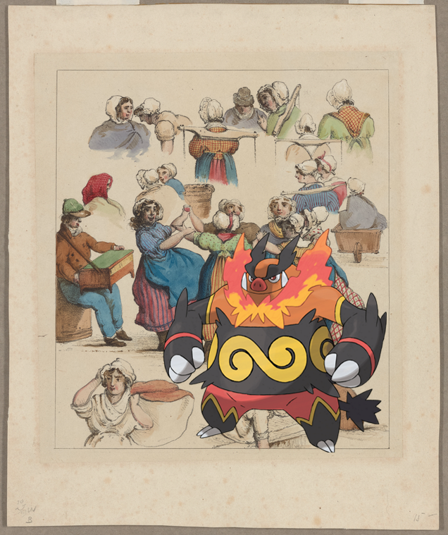
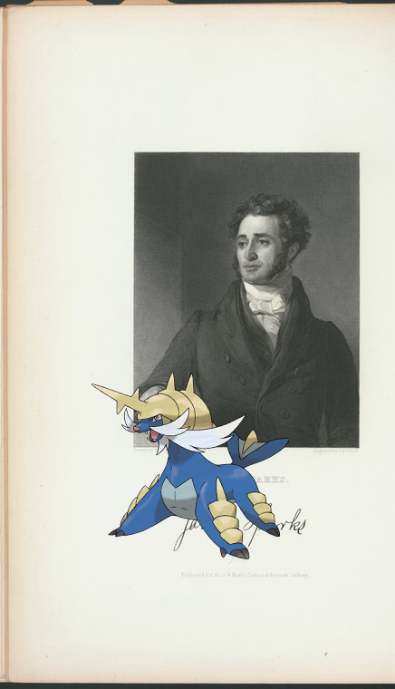

-
Lopunny ; derArion-Halle!
-
Lombre @ Hotel Plaza!
-
Sudowoodo | Hotel Martinique
-
Drifblim – Pantheon. The 42 assessors.
-
Bronzor + View of Ikao Street
-
Emboar ; [Washerwomen dancing]!
-
Absol on Newell, W. C..
-
Camerupt on Advertisements.!
-
Cleffa – Document.
-
Bronzong on Korama or Korwa, Hindoo, Mysore. (family)!
-
Tentacruel | Document.
-
Gastrodon on Tryon, William. New York. To Captain Lotbinière.
-
Articuno on Bhotanese, chiefly of Tibetan origin, Bhotan..
-
 Skarmory + Italy. Sardinia, 1843-1845
Skarmory + Italy. Sardinia, 1843-1845 -
Vanillish + Bowles, William. Nassau, New Providence.
-
Bouffalant + London Coffee House.
-

-
Taillow ; Lakewood Park; The Oaks Oceanside.
-
Rhyperior + The English empire in America
-
 , Poliwag | Planters Hotel!
, Poliwag | Planters Hotel! -
![Weavile on Netherlands, 1821 [part 2].! http://digitalcollections.nypl.org/items/6e139910-c553-012f-38c6-58d385a7bc34](media/finding-BQxnIjgY.png) Weavile ; Netherlands, 1821 [part 2]..
Weavile ; Netherlands, 1821 [part 2].. -
Dunsparce – Germany, Bavaria, 1810-19.!
-
 Alomomola, Palpitoad – Hotel Astor
Alomomola, Palpitoad – Hotel Astor -
 Oshawott – Use District Map Section No. 1.
Oshawott – Use District Map Section No. 1. -
 Grovyle ; The Dugan Kid who lives in Hogan's Alley!
Grovyle ; The Dugan Kid who lives in Hogan's Alley! -
Metagross @ Letter to M[athew] Carey [Philadelphia]!
-
Samurott @ Jared Sparks.!
-
![Aurorus – [The thirty-seven nats] 25. Shwébyin Naungdaw nat. 26. Shwébyin Nyídaw nat.. http://digitalcollections.nypl.org/items/b97862a0-c6df-012f-5e42-3c075448cc4b](media/finding-MheSTkaJ.png)
-

-
![Nidoran-M, Regigigas ; 31ST ANNIVERSARY [held by] 5TH CORPS-21ST REGIMENT-2ND DIV. [at]](media/finding-abaEWvuw.png)
-

-
 Flabebe, Lickitung ; EM. 6700!
Flabebe, Lickitung ; EM. 6700!